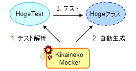
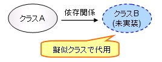

KikainekoMocker
Java
Mock
機械猫モッカー
モック
テスト・コードからクラスを自動生成
機械猫モッカー (KikainekoMocker) は、テスト・ケースから擬似クラスを自動生成する手法を実現するツールです。(*1)
擬似クラスとは、モックやスタブ、ドライバなどの名前で知られる実装は正しくないが、見かけ上は正しいクラスと同じ振る舞いを見せるクラス」のことで、主に開発・テストを容易にするために用いられます。
機械猫モッカー (KikainekoMocker) は、SCT (Simulated-Class by Tests) というテスト・ケースから擬似クラスを自動生成する手法を実現するツールです。
機械猫モッカーは、JUnit のテスト・ケースを読み、そのテストを通る擬似クラスを生成します。
(*1) このような手法をSCTと呼んでいます。SCTについての詳細はこちらをご覧ください。
「擬似クラスとSCT」
テストを通る擬似クラスを作成
機械猫モッカーは、JUnit のテスト・ケースを読み、そのテストを通る擬似クラスを生成します。
例えば、今HogeTestクラスというHogeクラスをテストするテスト・コードがあったとします。
ここで、機械猫モッカーにHogeTestを渡すと、HogeTestを解析しHogeクラスを自動で実装します。
この自動生成されたHogeクラスは確実にHogeTestをパスするように実装されます。
ただし実装としては、正しい実装はなされませんので注意してください。

では、この擬似クラスはどのような場合に便利なんでしょうか？
一つは後に紹介する「モック・パターン」というものがあります。
このモック・パターンを使用して開発／テストを簡単に行えるようになります。
他に設計の簡単な確認や、より良いインターフェースの探索などに使用することが可能です。
どのような場合に使用するのか？
機械猫モッカーはテストさえ書けば、擬似とは言え実際に動くクラスを手にすることができるツールです。
このことを上手く使えば様々な用途に使えます。
代表的な使用方法としては「モック・パターン」というものがありますが、ここではどのような場合に擬似クラスを必要とするのかを紹介します。
複数人でソフトウェアを開発する場合
複数人で1つのソフトウエアを開発する場合、クラスの依存関係が問題になる場合があります。
例えばあなたがAクラスを実装する予定であったとして、このときAクラスは、他のメンバーが開発中（あるいは開発予定）のBクラスに依存する場合、あなたはBクラスが完成するまでAクラスの実装／テストに入ることができなくなってしまいます。
このようにクラス間の依存関係が問題になる場合があります。
このため依存関係を注意しながらスケジュールを組む必要があったり、また最近ではこの依存関係を解消するための様々な技術（DIなど）が知られるようになりましたが擬似クラスはこの依存関係を解消する手法の一つです。つまり、Bクラスの擬似クラスを用意することで、Aクラスの実装／テストに入ることができます。

ここまでは擬似クラスが持つ利点です。そしてこのような状況で、機械猫モッカーは威力を発揮します。
つまりBクラスの擬似クラスを生成するのに機械猫モッカーを使用することができるのです。 しかも、機械猫モッカーを使用するにはテストだけを書きさえすれば良いのです。
この場合、Bクラスに対するテストを書きます。そのBクラスのテストを機械猫モッカーに読ませればBクラスの擬似クラスを生成します。
また、テストを定義としているため以下のような利点を享受できます。
- Bクラスの開発者にテストだけなら書いてもらいやすい
- テスト・コードは具体的なため、メンバー間での誤解が生まれにくい
- リアルなBクラスができた場合に、そのテストを再利用できる
Bクラスの実装は難しくても、そのテストはあまりコストが掛からない場合がよくあります。 そのためBクラスの開発予定者にテストを書いてもらい、そこから生成することができます。
また、テストコードはリアルなコードであるため互いの認識がずれにくいという利点もあります。
そして、リアルなBクラスが完成した際に、定義として用いたテストコードを再利用してテストが可能になります。
環境に依存する場合
DBなどのような環境に依存したクラスの開発／テストはコストが高くついてしまいがちであることが知られています。
つまり、環境を準備することが大変であったり、ちょっとテストするのにも時間やコストがかかったりしてしまうためです。
ここでも擬似クラスを使用して環境への依存を解消することができます。 つまり環境に依存した部分を切り出し、擬似クラスに置き換えてしまうのです。
そして機械猫モッカーを使用すれば複雑なクエリーを書くことも、環境を意識する必要もなくテストさえ書けばよいのです。
さらには!?
上記のように擬似クラスは依存関係を解消するのに威力を発揮します。
ですが、機械猫モッカーはただ擬似クラスを生成するだけではなく、テスト・コードを使用することを上手く使うことが考えられます。
例えば、ちょっと設計したものを実際に動かす・・・。皆さん新しい方法を模索してみてください。そして教えてください。笑
どのようなテストを書くのか？
詳しいテストケースの書き方や機械猫モッカーの使用方法については、「機械猫モッカーをどのように使うのか」をご参照ください。
ここでは概要を理解していただくことを目的に、どのような擬似クラスが欲しいときにどのようなテストを書けばよいかを解説します。
単純な計算を行う擬似クラスを作る
例えば、演算をsetして、計算させるような擬似クラスが欲しい場合、以下のようなテストを書けばよいでしょう。
package sample;
import junit.framework.TestCase;
public class CalcTest extends TestCase {
Calc calc;
public void testAdd(){
calc=new Calc();
calc.set("+");
assertEquals(5,calc.get(2,3));
}
これで「+」をセットした後でgetメソッドに2と3を入れると5を返してくれる擬似クラスを生成することができます。
オブジェクト型を扱う擬似クラスを作る
機械猫モッカーはオブジェクト型の扱いも問題ないため、オブジェクト型を扱う擬似クラスを生成することができます。
例えば、さきほどの上のテストコードのint部分をInteger型に変えたテストにしてもモッカーは正しく生成します。
public void testAddInteger(){
calc=new Calc();
calc.set("+");
Integer i2=new Integer(2);
Integer i3=new Integer(3);
assertEquals(new Integer(5),calc.get(i2,i3));
}
どうでしょうか、機械猫モッカーに読ませるテストだと言っても、普通のテストケースとなんら変わりませんね。
色々な値を返すメソッドを持つ擬似クラスを作る
さて、今までの例では一つのメソッドは一つの値を返していませんでした。
では、次に色々な値を返すメソッドを持つ擬似クラスを作ってみましょう。
public void testIncrement(){
calc=new Calc();
calc.setIncrement(1,0);
assertEquals(0,calc.next());
assertEquals(1,calc.next());
assertEquals(2,calc.next());
}
処理に特に意味はないのですが、一つ一つカウントアップするテストの例です。
当然このようなテストも問題なく擬似クラスを生成します。
これも、自然なテストケースですね。
また、もちろんsetUpメソッドやtearDownメソッドをオーバーライドしていても何の問題もありません。
このように機械猫モッカーでは普通のテストケースから擬似クラスを生成することが可能です。
Contents
- ホーム
- 何ができるのか
- どのように使うのか
- どのように動いているのか
- ダウンロード